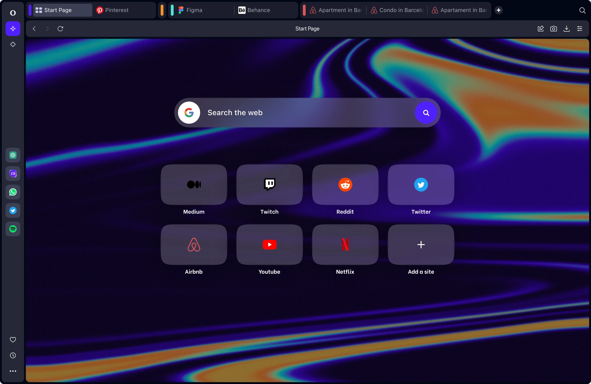

Opera has announced the launch of its new browser, Opera One, which is expected to replace the company's current flagship desktop browser later this year.
The new browser comes with a few updates, including an overhauled user interface (UI), integration with AI chatbots, and improved tab management features.
The updated design of Opera One features more rounded shapes for UI elements such as tabs, address bar, and sidebar. While it is not a complete redesign, much of the UI, particularly the design and layout of menus, is identical to the current version of the browser.
One of the key improvements of Opera One is its multithreaded compositor, which Opera claims is a first for any major Chromium-based browser. This enhances the performance of UI animations, of which the new browser has plenty.
Furthermore, Opera has also integrated ChatGPT and ChatSonic within its sidebar feature, allowing users to open both services in a small window on the side. Additionally, there is an integrated AI Prompts feature that provides suggestions to shorten the article, highlight the point, create a tweet, create a meme idea, etc. about the current page's content using one of the aforementioned services, and these options change based on the page.
Although Opera One is not a significant departure from the existing Opera browser, it has been marketed with buzzwords such as AI and modularity.
The browser is currently available in an 'early access' version and is set to replace the standard Opera for Windows, macOS, and Linux sometime later this year.